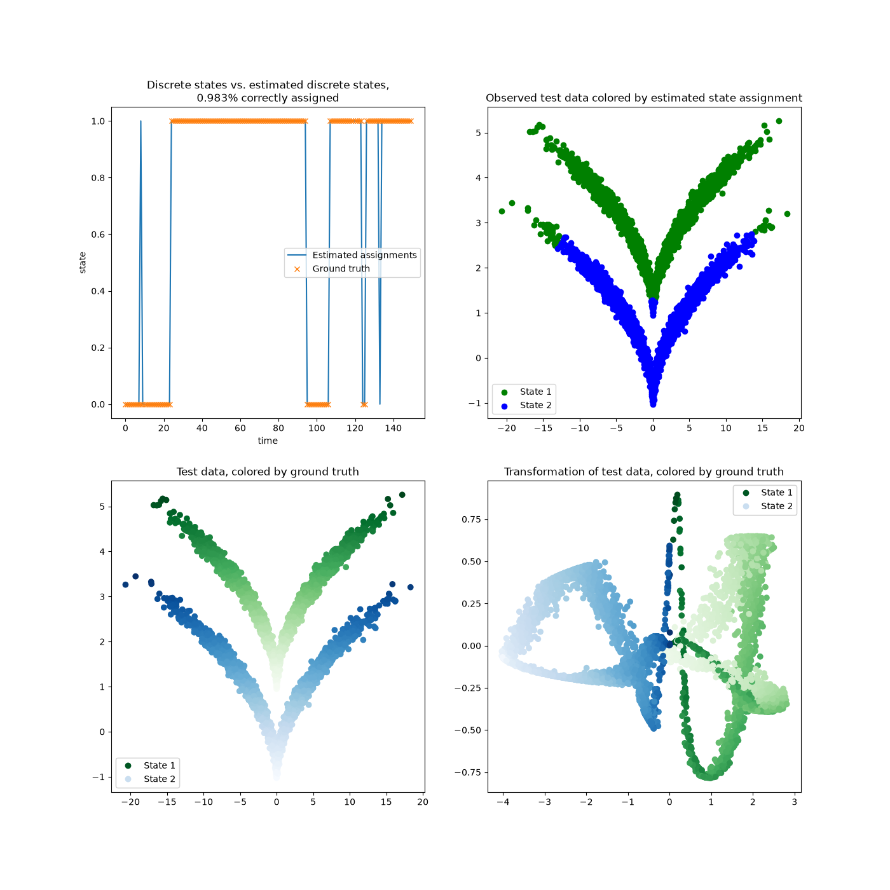

Note
Go to the end to download the full example code.
Kernel CCA on the sqrt-Model to transform data¶
This example shows an application of KernelCCA on the
sqrt model dataset. We transform the data by evaluating the estimated eigenfunctions
into a (quasi) linearly separable space. Crisp assignments are obtained by KMeans
clustering.

/tmp/claude-1000/-home-mho-dev-gh-deeptime/98292411-8749-4f62-8c3f-3cfd662a6278/scratchpad/venv/lib/python3.12/site-packages/matplotlib/cbook.py:1811: ComplexWarning: Casting complex values to real discards the imaginary part
return math.isfinite(val)
/tmp/claude-1000/-home-mho-dev-gh-deeptime/98292411-8749-4f62-8c3f-3cfd662a6278/scratchpad/venv/lib/python3.12/site-packages/matplotlib/collections.py:205: ComplexWarning: Casting complex values to real discards the imaginary part
offsets = np.asanyarray(offsets, float)
11 import numpy as np
12 import matplotlib as mpl
13 import matplotlib.pyplot as plt
14
15 from deeptime.clustering import KMeans
16 from deeptime.data import sqrt_model
17 from deeptime.decomposition import KernelCCA
18 from deeptime.kernels import GaussianKernel
19
20 dtraj, obs = sqrt_model(1500)
21 dtraj_test, obs_test = sqrt_model(5000)
22
23 kernel = GaussianKernel(2.)
24 est = KernelCCA(kernel, n_eigs=2)
25 model = est.fit((obs[1:], obs[:-1])).fetch_model()
26 evals = model.transform(obs_test)
27 clustering = KMeans(2).fit(np.real(model.transform(obs))).fetch_model()
28 assignments = clustering.transform(np.real(evals))
29
30 n_mismatch = np.sum(np.abs(assignments - dtraj_test))
31 assignments_perm = np.where((assignments == 0) | (assignments == 1), assignments ^ 1, assignments)
32 n_mismatch_perm = np.sum(np.abs(assignments_perm - dtraj_test))
33
34 if n_mismatch_perm < n_mismatch:
35 assignments = assignments_perm
36 n_mismatch = n_mismatch_perm
37
38 f, ((ax1, ax2), (ax3, ax4)) = plt.subplots(2, 2, figsize=(14, 14))
39 ax1.set_title(f"Discrete states vs. estimated discrete states,\n"
40 f"{(len(dtraj_test) - n_mismatch) / len(dtraj_test):.3f}% correctly assigned")
41 ax1.plot(assignments[:150], label="Estimated assignments")
42 ax1.plot(dtraj_test[:150], 'x', label="Ground truth")
43 ax1.set_xlabel("time")
44 ax1.set_ylabel("state")
45 ax1.legend()
46
47
48 def plot_scatter(ax, states, observations, obs_ref=None):
49 mask = np.zeros(states.shape, dtype=bool)
50 mask[np.where(states == 0)] = True
51 if obs_ref is None:
52 ax.scatter(*observations[mask].T, color='green', label='State 1')
53 ax.scatter(*observations[~mask].T, color='blue', label='State 2')
54 ax.legend()
55 else:
56 scatter1 = ax.scatter(*observations[mask].T, cmap=mpl.colormaps['Greens'], c=obs_ref[mask][:, 1])
57 scatter2 = ax.scatter(*observations[~mask].T, cmap=mpl.colormaps['Blues'], c=obs_ref[~mask][:, 1])
58 h1, l1 = scatter1.legend_elements(num=1)
59 h2, l2 = scatter2.legend_elements(num=1)
60 ax.add_artist(ax.legend(handles=h1 + h2, labels=["State 1", "State 2"]))
61
62
63 ax2.set_title("Observed test data colored by estimated state assignment")
64 plot_scatter(ax2, assignments, obs_test)
65
66 ax3.set_title("Test data, colored by ground truth")
67 plot_scatter(ax3, dtraj_test, obs_test, obs_test)
68
69 ax4.set_title("Transformation of test data, colored by ground truth")
70 plot_scatter(ax4, dtraj_test, evals, obs_test)
Total running time of the script: (0 minutes 1.380 seconds)
Estimated memory usage: 917 MB